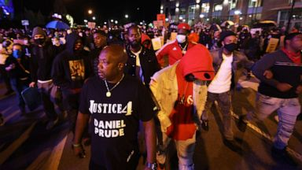

In the year 2020, in Rochester New York, Rayshard Brooks had to run to the street naked while having mental health complications. When he was found at 3AM on the streets, he was arrested by the police becasue of the "trouble" he created. When he was spiiting and he said he has coronavirus, the police placed a spit bag on his head. Once the police were already bothered by his unstableness, Officer MArk Vaughn usd=ed his body weight to force Prude's head against the pavement as the other police restrained him. That night, he was sent to the hospital and died 7 days later. His autospy determined that he died of "complications of asphyxia" due to the actions of the police. .
On September 4, 2020 NBC New York made a report regarding Prude's death. In this report, we can see how badly they handled Prude. They were already informed that he has unstable due to his mental sickness but they still insist on doing brutal things to him. They weren't considerate enough of what they were doing, which then caused Prude's death. Click the image of Rayshard Brooks to see the full report.
Here are social media links related to the Black Lives Matter Movement. Also above, is the link for the official BLM website.
image sources: https://interactive.aljazeera.com/aje/2020/know-their-names/index.html, https://abcnews.go.com/US/11-arrested-cops-hurt-3rd-night-rochester-protests/story?id=72837825